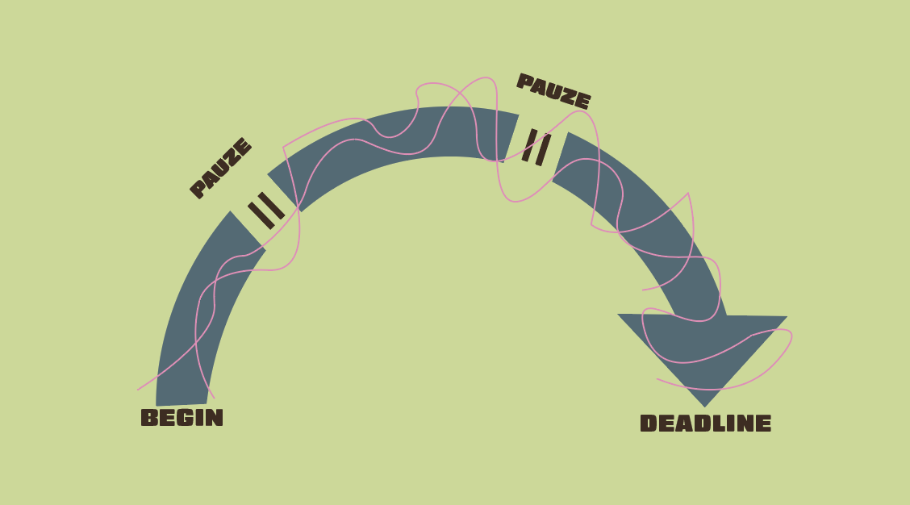

Hallo! Ik ben Ivanna Torous, een creatieve geest die houdt van kleur, humor en een tikje chaos.
Ik gebruik design om mensen te laten glimlachen, verrassen of even laten stilstaan.
Mijn stijl? Vrolijk, eigenzinnig en altijd met een twist. Ik speel graag met sterke contrasten, opvallende typografie en beweging.
Of het nu een illustratie is, een datavisualisatie of een webprototype — ik wil dat het voelt. Dat het blijft hangen. Of dat je er gewoon even om lacht.
Ik zie mezelf als een entertainer met een boodschap: niet te serieus, maar altijd bewust. Welkom in mijn wereld — waar design een glimlach mag brengen.
Tussen de pixels en patronen door neem ik twee kleine reizen naar pauzeland – waar inspiratie ademhaalt en ideeën zich stiekem vermenigvuldigen.
>
In mei heb ik officieel 3 Red Bulls geofferd aan de heilige orde van de deadlines.
Elk blikje was een wapen in mijn strijd tegen slaperigheid. Mijn hersenen draaiden op turbo,
mijn ziel op cafeïne. Ik studeerde niet… ik Red Bull’de me erdoorheen.
Instagram: Torouskkaaa
Telefoon: +32 465 43 44 78